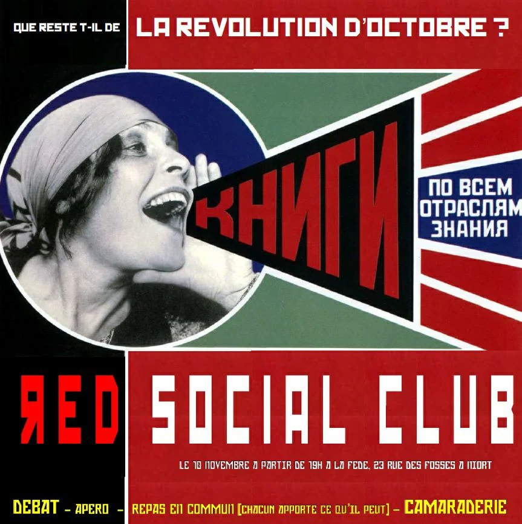

Publication d’archives
3ème soirée Red Social Club: les 100 ans de la révolution d'octobre!
Date indiquée par Facebook · 8 novembre 2017
Texte conservé avec la publication
Contexte du dossier
En novembre 2017, une troisième soirée du Red Social Club prend pour sujet les cent ans de la révolution d’Octobre. Le 2 mars 2021, la page relaie une autre invitation à parcourir l’histoire : l’exposition de la Fondation Gabriel Péri pour le centenaire du Congrès de Tours et du PCF. La crise sanitaire empêchant l’accès prévu au public, une visite filmée est proposée. Ces initiatives utilisent des formes différentes pour un même effort d’éducation populaire : rendre les documents et les débats accessibles, plutôt que réserver l’histoire politique aux spécialistes ou aux seules dates anniversaires.

Sources
Archive rouge · export Facebook · AR-0002-FB-02123
À lire aussi · Marcel Paul, au-delà d’un nom de parking